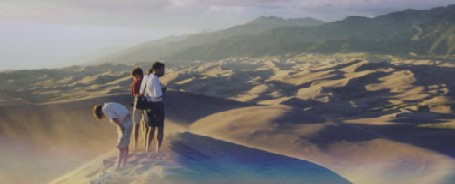

When planning a Colorado trip, consider the following:
When planning a Colorado trip, consider the following:
Colorado offers unequaled natural mountain scenery, abundant wildlife, and more outdoor activities than you can imagine. The name Colorado comes from the Spanish word “colorado” which means “reddish color.” On August 1, 1876, President Ulysses Grant proclaimed Colorado the 38th state.
Colorado’s spectacular scenery extends from the Rocky Mountains National Park to the Florissant Fossil Beds National Monument. Visitors flock to Colorado to enjoy the state’s four national parks, five national monuments, and over forty state parks.
When planning a Colorado trip, consider the following:
Park entrance fees vary throughout the state and are subject to change.
Last Updated: